순차 데이터 학습: LSTM 복습과 GRU 연습 장점이 드러나는 예제: 덧셈 문제로 보는 LSTM과 GRU
Table of Contents
1. 1장. 들어가기 전에
1.1. 1.1 수업 목표
첫째, 순차 데이터가 무엇인지 이해한다. 둘째, LSTM의 구조를 다시 정리하고 GRU를 새로 익힌다. 셋째, 실제 데이터로 모델을 만들고 결과를 평가한 뒤 개선까지 해 본다.
1.2. 1.2 순차 데이터(시계열·문장)의 특징
순차 데이터는 순서가 의미를 가지는 데이터다. 순서를 바꾸면 뜻이 달라진다.
예)
- 시계열: 어제 기온, 오늘 기온, 내일 기온. 시간 순서가 있다.
- 문장: “나는 밥을 먹었다”. 단어 순서를 바꾸면 어색해진다.
일반 데이터와의 차이는 두 가지다.
첫째, 앞의 값이 뒤의 값에 영향을 준다. 오늘 기온은 어제 기온과 관련이 깊다. 둘째, 길이가 정해져 있지 않다. 문장은 짧을 수도 길 수도 있다.
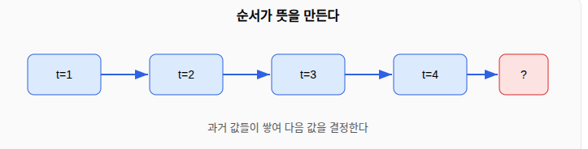
1.3. 1.3 RNN이 필요한 이유
일반 신경망은 입력을 한 번에 받는다. 입력의 순서를 기억하지 못한다. 그림 한 장을 보고 고양이인지 맞히는 일에는 잘 맞는다. 하지만 문장이나 시계열에는 약하다.
RNN(순환 신경망)은 순서를 처리하려고 만든 구조다. 핵심은 “기억”이다. RNN은 이전 단계의 결과를 다음 단계로 넘긴다. 이 넘기는 값을 은닉 상태(hidden state) \(h_t\) 라고 부른다.
한 단계의 계산은 다음과 같다.
\[ h_t = \tanh(W_h\, h_{t-1} + W_x\, x_t + b) \]
기호의 뜻은 이렇다.
- \(x_t\): 현재 시점의 입력 (예: 오늘 기온)
- \(h_{t-1}\): 바로 앞 단계에서 넘어온 기억
- \(W_h, W_x\): 학습으로 정해지는 가중치
- \(\tanh\): 결과를 \(-1\)과 \(1\) 사이로 눌러 주는 함수
같은 계산을 시점마다 반복한다. 그래서 “순환”이라는 이름이 붙는다.
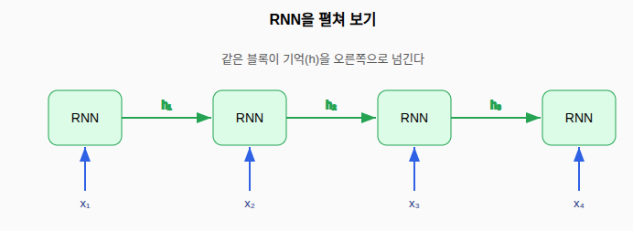
2. 2장. LSTM 기본 복습
2.1. 2.1 RNN의 한계: 장기 의존성 문제 고찰
RNN은 짧은 순서는 잘 다룬다. 하지만 순서가 길어지면 앞쪽 정보를 잊는다. 이것을 장기 의존성 문제라고 부른다.
예를 보자. “나는 프랑스에서 자랐다 … 그래서 나는 __를 잘한다.” 빈칸의 답은 “프랑스어”다. 정답을 맞히려면 한참 앞의 “프랑스”를 기억해야 한다. RNN은 거리가 멀면 이 기억을 잃는다.
학습과정에 곱셈이 있기 때문이다. RNN은 기억을 넘길 때마다 비슷한 수를 계속 곱한다. \(0\)과 \(1\) 사이의 작은 수를 여러 번 곱하면 값은 빠르게 \(0\)에 가까워진다.
\[ 0.5 \times 0.5 \times 0.5 \times \cdots \times 0.5 \;\to\; 0 \]
값이 \(0\)에 가까워지면 앞쪽 정보가 학습에 거의 반영되지 않는다. 이것을 기울기 소실이라고 부른다.
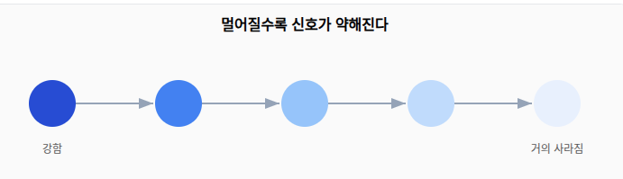
2.2. 2.2 LSTM의 핵심: 셀 상태와 게이트
LSTM은 이 문제를 풀려고 두 가지 장치를 더한다.
첫째는 셀 상태(cell state) \(C_t\) 다. 셀 상태는 정보가 흐르는 “컨베이어 벨트”다. 벨트 위 정보는 곱셈 없이 거의 그대로 흘러간다. 그래서 먼 과거의 정보도 살아남는다.
둘째는 게이트(gate)다. 게이트는 정보를 얼마나 통과시킬지 정하는 수도꼭지다. 게이트는 시그모이드 함수 \(\sigma\) 를 쓴다.
\[ \sigma(x) = \frac{1}{1 + e^{-x}} \]
시그모이드는 결과를 \(0\)과 \(1\) 사이로 만든다. \(0\)이면 잠금, \(1\)이면 열림이다. 게이트 값과 정보를 원소끼리 곱하면 통과량이 정해진다.
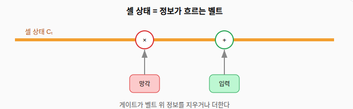
2.3. 2.3 세 개의 게이트 (망각·입력·출력 게이트)
LSTM에는 게이트가 세 개 있다. 각 게이트는 역할이 다르다.
망각 게이트 는 과거 기억 중 버릴 것을 정한다. \[ f_t = \sigma(W_f\,[h_{t-1}, x_t] + b_f) \]
입력 게이트 는 새 정보 중 받을 것을 정한다. 받을 후보 \(\tilde{C}_t\) 도 함께 만든다. \[ i_t = \sigma(W_i\,[h_{t-1}, x_t] + b_i), \qquad \tilde{C}_t = \tanh(W_C\,[h_{t-1}, x_t] + b_C) \]
출력 게이트 는 기억 중 밖으로 내보낼 것을 정한다. \[ o_t = \sigma(W_o\,[h_{t-1}, x_t] + b_o) \]
\([h_{t-1}, x_t]\) 는 앞 기억과 현재 입력을 이어 붙인 묶음이다. 세 게이트는 모두 같은 묶음을 보고 각자 판단한다.
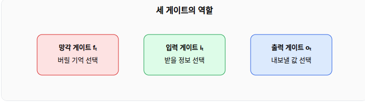
2.4. 2.4 LSTM 안에서 정보가 흐르는 과정
한 시점의 전체 계산은 다음 순서로 진행된다.
- 망각 게이트로 과거 셀 상태를 줄인다: \(f_t \odot C_{t-1}\)
- 입력 게이트로 새 후보를 더한다: \(i_t \odot \tilde{C}_t\)
- 두 결과를 합쳐 새 셀 상태를 만든다. \[ C_t = f_t \odot C_{t-1} + i_t \odot \tilde{C}_t \]
- 출력 게이트로 은닉 상태를 만든다. \[ h_t = o_t \odot \tanh(C_t) \]
여기서 \(\odot\) 는 같은 자리끼리 곱하는 원소별 곱이다. 셀 상태가 덧셈 위주로 갱신되는 점이 핵심이다. 덧셈은 곱셈처럼 값을 빠르게 줄이지 않는다. 그래서 먼 과거 정보가 잘 보존된다.
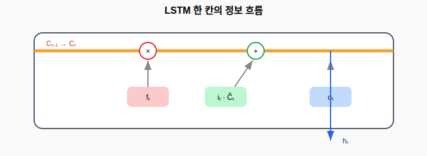
3. 3장. GRU
3.1. 3.1 GRU의 필요성
LSTM은 강력하다. 하지만 게이트가 세 개라서 계산이 무겁다. 학습할 가중치도 많다.
GRU는 LSTM을 더 가볍게 만든 구조다. 게이트를 두 개로 줄였다. 셀 상태와 은닉 상태를 하나로 합쳤다. 그래서 계산이 빠르다. 데이터가 적거나 모델을 가볍게 하고 싶을 때 좋다.
성능은 문제에 따라 다르다. 많은 경우 LSTM과 GRU의 성능 차이는 크지 않다. 그래서 둘 다 시도해 보고 더 나은 쪽을 고른다.
3.2. 3.2 GRU의 두 게이트 (리셋 게이트·업데이트 게이트)
GRU에는 게이트가 두 개 있다.
리셋 게이트 \(r_t\) 는 과거 기억을 얼마나 잊을지 정한다. \[ r_t = \sigma(W_r\,[h_{t-1}, x_t]) \]
업데이트 게이트 \(z_t\) 는 과거와 새 정보를 섞는 비율을 정한다. \[ z_t = \sigma(W_z\,[h_{t-1}, x_t]) \]
새 후보 기억은 리셋 게이트로 걸러진 과거를 써서 만든다. \[ \tilde{h}_t = \tanh(W\,[\,r_t \odot h_{t-1},\; x_t\,]) \]
마지막으로 업데이트 게이트가 과거와 후보를 섞는다. \[ h_t = (1 - z_t)\odot h_{t-1} + z_t \odot \tilde{h}_t \]
이 마지막 식이 GRU의 핵심이다. \(z_t\) 가 \(0\)에 가까우면 과거를 그대로 유지한다. \(z_t\) 가 \(1\)에 가까우면 새 정보로 갈아 끼운다. 하나의 비율이 “유지”와 “교체”를 동시에 정한다.
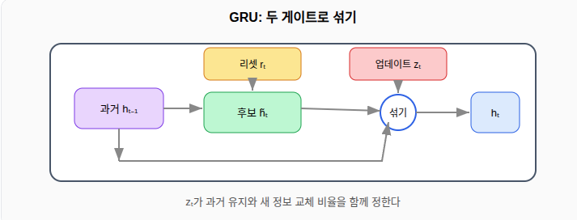
3.3. 3.3 LSTM과 GRU 구조 비교하기
두 개의 구조를 비교해보자.
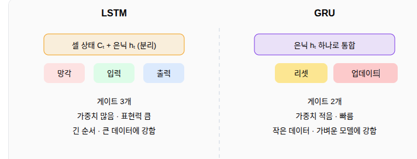
- 게이트 수: LSTM은 3개, GRU는 2개.
- 상태: LSTM은 셀 상태와 은닉 상태를 따로 둔다. GRU는 하나로 합친다.
- 속도: GRU가 더 빠르다.
- 표현력: LSTM이 더 세밀할 수 있다.
3.4. 3.4 상황에 따른 선택
두 모델의 선택 기준을 정리하면 다음과 같다.
GRU를 먼저 고려하는 경우
- 데이터 양이 적다.
- 빠른 학습과 가벼운 모델이 필요하다.
- 실시간 처리가 중요하다. 예: 모바일 기기의 동작 인식.
LSTM을 먼저 고려하는 경우
- 순서가 매우 길다.
- 데이터 양이 많고 미세한 패턴이 중요하다.
- 예: 긴 문장의 번역, 오랜 기간의 기온 예측.
실무 상황 예시:
- 스마트워치 심박 데이터로 운동 종류를 즉시 맞히기: 가벼운 GRU가 적합하다.
- 1년치 시간별 전력 사용량으로 다음 주 수요 예측하기: 긴 패턴을 다루는 LSTM이 적합하다.
- 정답을 모를 때: 둘 다 학습해 검증 점수를 비교한 뒤 고른다.
결론: 먼저 GRU로 빠르게 기준 점수를 만든다. 성능이 부족하면 LSTM으로 바꿔 비교한다.
4. 4장. 실습 준비: 데이터 탐색과 정리
4.1. 4.1 실습 문제 소개와 데이터 불러오기
실습의 문제는 시계열 예측이다. 과거 일정 구간의 값을 보고 바로 다음 값을 맞힌다.
실제 측정값을 흉내 낸 데이터를 직접 만든다. 데이터에는 세 가지 성분을 넣는다.
- 추세: 시간에 따라 천천히 올라가는 흐름
- 계절성: 일정 주기로 오르내리는 반복
- 잡음: 불규칙한 잡음성분
이렇게 만들면 인터넷 연결 없이도 같은 결과를 재현할 수 있다.
import numpy as np
import pandas as pd
import matplotlib.pyplot as plt
# 재현성을 위해 난수 씨앗 고정
# seed: 같은 숫자를 쓰면 매번 같은 난수가 나온다
np.random.seed(42)
# 데이터 길이 (예: 800일치)
N = 800
t = np.arange(N)
# 1) 추세: 시간에 비례해 완만히 증가
trend = 0.02 * t
# 2) 계절성: 주기 50으로 반복 (sin 함수)
season = 5 * np.sin(2 * np.pi * t / 50)
# 3) 잡음: 평균 0, 표준편차 1인 정규분포 난수
# normal(loc, scale, size): loc=평균, scale=표준편차, size=개수
noise = np.random.normal(0, 1, N)
# 세 성분을 더해 최종 시계열 생성
series = 10 + trend + season + noise
# 표 형태로 보관 (DataFrame: 행과 열을 가진 표 자료구조)
df = pd.DataFrame({"day": t, "value": series})
print(df.head()) # head(): 앞 5행 미리 보기
day value 0 0 10.496714 1 1 10.508402 2 2 11.931138 3 3 13.423653 4 4 12.254615
4.2. 4.2 데이터 살펴보기 (탐색적 분석)
데이터를 바로 모델에 넣지 않는다. 먼저 통계와 그래프로 성질을 파악한다.
통계로 보기. 평균, 표준편차, 최솟값, 최댓값을 본다. 값의 범위와 흩어진 정도를 알 수 있다.
# describe(): 개수, 평균, 표준편차, 사분위수 등 기초 통계를 한 번에 출력
print(df["value"].describe())
count 800.000000 mean 17.982102 std 5.813823 min 3.790196 25% 13.788830 50% 18.084325 75% 22.083086 max 32.790218 Name: value, dtype: float64
그래프로 보기. 선 그래프로 전체 흐름을 본다. 추세와 반복이 눈에 보이는지 확인한다.
plt.figure(figsize=(10, 4)) # figsize: 그림 크기 (가로, 세로) 인치
plt.plot(df["day"], df["value"]) # plot(x, y): 선 그래프
plt.title("time series overview")
plt.xlabel("day")
plt.ylabel("value")
plt.grid(True) # grid: 눈금선 표시로 읽기 쉽게
plt.show()
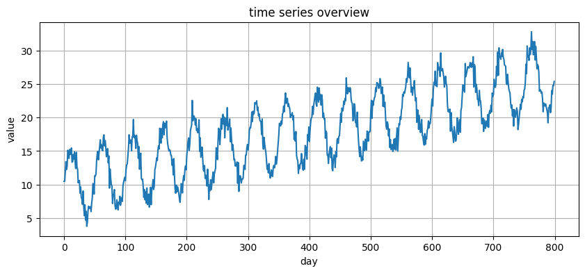
판단 포인트는 세 가지다.
- 값이 시간에 따라 오르는가 (추세 확인)
- 일정 간격으로 같은 모양이 반복되는가 (계절성 확인)
- 튀는 점이 있는가 (이상치 확인)
그래프로 본 성질이 4.1에서 넣은 추세·계절성·잡음과 맞는지 확인한다.
4.3. 4.3 결측치·이상치 확인과 처리
결측치 는 비어 있는 값이다. 모델은 빈 값을 계산하지 못한다. 그래서 먼저 채우거나 지운다.
# isna(): 값이 비었는지 True/False로 표시
# sum(): True 개수를 더해 결측치 수를 센다
print("결측치 개수:", df["value"].isna().sum())
# 만약 결측치가 있다면 앞 값으로 채우는 방법 (ffill: forward fill)
df["value"] = df["value"].ffill()
결측치 개수: 0
이상치 는 다른 값들과 크게 동떨어진 값이다. 표준점수(z-score)로 찾는다. 표준점수는 평균에서 표준편차의 몇 배만큼 떨어졌는지를 나타낸다.
\[ z = \frac{x - \mu}{\sigma} \]
보통 \(|z| > 3\) 이면 이상치로 본다.
mean = df["value"].mean() # 평균 μ
std = df["value"].std() # 표준편차 σ
# 각 값의 표준점수 계산
z = (df["value"] - mean) / std
# 절댓값이 3을 넘는 값의 개수 확인
outliers = (z.abs() > 3).sum()
print("이상치 개수:", outliers)
# 이상치를 평균으로 대체하는 간단한 처리
df.loc[z.abs() > 3, "value"] = mean
이상치 개수: 0
처리 원칙은 이렇다. 측정 오류로 보이면 대체하거나 지운다. 의미 있는 급변이면 남긴다.
4.4. 4.4 정규화와 시퀀스(window) 데이터 만들기
정규화 는 값의 크기를 비슷한 범위로 맞추는 작업이다. 값의 범위가 제각각이면 학습이 느려진다. 여기서는 최소-최대 정규화로 \(0\)과 \(1\) 사이로 바꾼다.
\[ x' = \frac{x - x_{\min}}{x_{\max} - x_{\min}} \]
v_min = df["value"].min()
v_max = df["value"].max()
# 0~1 범위로 변환
scaled = (df["value"].values - v_min) / (v_max - v_min)
print("정규화 후 범위:", scaled.min(), "~", scaled.max())
정규화 후 범위: 0.0 ~ 1.0
시퀀스(window) 만들기. 모델에 넣으려면 데이터를 “입력 묶음”과 “정답”으로 잘라야 한다. 과거 window 개 값을 입력으로, 바로 다음 값을 정답으로 둔다.
def make_window(data, window):
"""
시계열을 (입력 묶음, 정답) 쌍으로 자른다.
data: 1차원 시계열 배열
window: 입력으로 쓸 과거 길이
반환: X(입력들), y(정답들)
"""
X, y = [], []
for i in range(len(data) - window):
X.append(data[i : i + window]) # 과거 window개
y.append(data[i + window]) # 그 다음 1개
return np.array(X), np.array(y)
WINDOW = 30 # 과거 30일로 다음 1일 예측
X, y = make_window(scaled, WINDOW)
# LSTM/GRU 입력은 (샘플 수, 시점 수, 특성 수) 모양이어야 한다
# 특성이 값 하나뿐이므로 마지막 차원을 1로 만든다
X = X.reshape(X.shape[0], X.shape[1], 1)
print("X 모양:", X.shape, " y 모양:", y.shape)
X 모양: (770, 30, 1) y 모양: (770,)
4.4.1. 시퀀스(window) 데이터 만들기
- 개념: 긴 줄을 작은 조각으로 자르기
시계열은 하나의 긴 숫자 줄이다. 매일 잰 기온이 한 줄로 이어진다. 그런데 모델은 이 긴 줄을 통째로 배우지 못한다. 모델이 배우려면 “입력과 정답” 쌍이 여러 개 필요하다.
그래서 줄 위에 정해진 크기의 창(window)을 올린다. 창을 한 칸씩 밀면서 조각을 떼어 낸다. 창 안에 들어온 과거 값들이 입력이 된다. 창 바로 다음 값이 정답이 된다. 창을 한 칸 밀면 새 입력과 정답 쌍이 또 하나 생긴다.
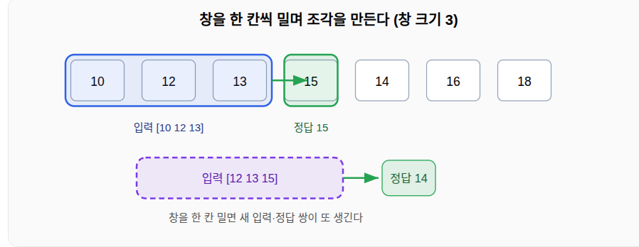
위 그림을 표로 적으면 이렇다. 창 크기는 3이다.
입력 (과거 3개) 정답 (다음 1개) 10 12 13 15 12 13 15 14 13 15 14 16 15 14 16 18 긴 줄 하나에서 학습 표본 네 개가 만들어졌다. 창 크기가 30이면 과거 30일을 보고 다음 1일을 예측하는 쌍이 된다.
- 코드로 만들기
문제 정의를 그대로 코드로 옮긴다.
import numpy as np def make_window(data, window): """ 시계열을 (입력 묶음, 정답) 쌍으로 자른다. data: 1차원 시계열 배열 window: 입력으로 쓸 과거 길이(창 크기) 반환: X(입력들), y(정답들) """ X, y = [], [] for i in range(len(data) - window): X.append(data[i : i + window]) # 창 안의 과거 window개 y.append(data[i + window]) # 창 바로 다음 1개 return np.array(X), np.array(y) series = np.array([10, 12, 13, 15, 14, 16, 18], dtype="float32") X, y = make_window(series, window=3) print("입력 X:\n", X) print("정답 y:", y) # 순환층 입력은 (샘플 수, 시점 수, 특성 수) 모양이어야 한다 # 값이 하나뿐이므로 마지막 차원을 1로 만든다 X = X.reshape(X.shape[0], X.shape[1], 1) print("X 모양:", X.shape) # (4, 3, 1)입력 X: [[10. 12. 13.] [12. 13. 15.] [13. 15. 14.] [15. 14. 16.]] 정답 y: [15. 14. 16. 18.] X 모양: (4, 3, 1)
- 왜 필요한가
이 작업이 필요한 이유는 세 가지다.
첫째, 지도학습 형태로 바꾼다. 예측 문제를 “입력을 주면 정답을 맞히는” 익숙한 학습 문제로 바꾼다. 긴 줄 하나로는 배울 수 없다. 잘게 자르면 수백, 수천 개의 학습 표본이 생긴다.
둘째, 입력 길이를 똑같이 맞춘다. LSTM과 GRU 같은 순환층은 입력 모양이 일정해야 한다. 창 크기를 고정하면 모든 입력이 같은 길이가 된다. 그래서 모양을 \((\text{샘플 수}, \text{창 크기}, \text{특성 수})\) 로 만든다.
셋째, 예측 과제 자체를 정한다. 창 크기는 모델이 한 번에 보는 과거의 양이다. 이 값은 직접 고른다. 너무 짧으면 긴 흐름을 놓친다. 너무 길면 계산이 무거워지고 오래된 잡음까지 끌어온다.
정리하면 시퀀스 윈도우는 이어진 시계열을 모델이 받을 수 있는 고정 크기 조각으로 잘라, 입력과 정답 쌍을 만드는 작업이다. 이 단계를 거쳐야 데이터 분할과 모델 학습으로 넘어갈 수 있다.
4.5. 4.5 학습·검증·테스트 데이터 나누기
데이터를 세 묶음으로 나눈다.
- 학습용: 모델이 패턴을 배우는 데 쓴다.
- 검증용: 학습 중간에 성능을 점검하고 설정을 고르는 데 쓴다.
- 테스트용: 마지막에 진짜 실력을 재는 데 쓴다.
시계열은 시간 순서를 지켜야 한다. 그래서 무작위로 섞지 않고 앞에서부터 순서대로 자른다.
n = len(X)
train_end = int(n * 0.7) # 앞 70% 학습
val_end = int(n * 0.85) # 다음 15% 검증, 마지막 15% 테스트
X_train, y_train = X[:train_end], y[:train_end]
X_val, y_val = X[train_end:val_end], y[train_end:val_end]
X_test, y_test = X[val_end:], y[val_end:]
print("학습:", X_train.shape[0],
"검증:", X_val.shape[0],
"테스트:", X_test.shape[0])
학습: 2 검증: 1 테스트: 1
5. 5장. 실습: LSTM·GRU 모델 만들기
5.1. 5.1 모델 구조 설계하기
설계는 단순하게 시작한다. 순환층 한 개와 출력층 한 개를 쌓는다.
- 순환층(LSTM 또는 GRU): 시계열의 패턴을 읽는다.
- 출력층(Dense): 다음 값 하나를 내보낸다.
손실 함수는 평균제곱오차(MSE)를 쓴다. 예측과 정답의 차이를 제곱해 평균낸 값이다. 작을수록 좋다.
\[ \text{MSE} = \frac{1}{n}\sum_{k=1}^{n}(y_k - \hat{y}_k)^2 \]
학습에 필요한 도구를 먼저 불러온다.
import tensorflow as tf
from tensorflow.keras.models import Sequential
from tensorflow.keras.layers import LSTM, GRU, Dense
from tensorflow.keras.callbacks import EarlyStopping
tf.random.set_seed(42) # 텐서플로 난수 고정으로 결과 재현
5.2. 5.2 LSTM 모델 구현하기
def build_lstm(window, units=32):
"""
LSTM 예측 모델을 만든다.
window: 입력 시점 수 (과거 길이)
units: LSTM 내부 뉴런 수 (많을수록 표현력↑, 계산량↑)
"""
model = Sequential([
# LSTM 층
# units: 은닉 상태의 크기
# input_shape=(시점 수, 특성 수): 한 샘플의 모양
LSTM(units, input_shape=(window, 1)),
# Dense(1): 값 하나를 출력하는 완전연결층
Dense(1)
])
# compile: 학습 방법을 설정
# optimizer="adam": 가중치를 자동으로 잘 조정하는 방법
# loss="mse": 평균제곱오차를 줄이는 방향으로 학습
model.compile(optimizer="adam", loss="mse")
return model
lstm_model = build_lstm(WINDOW)
lstm_model.summary() # summary: 층 구성과 파라미터 수 출력
/home/minux/.virtualenvs/ml/lib/python3.12/site-packages/keras/src/layers/rnn/rnn.py:199: UserWarning: Do not pass an `input_shape`/`input_dim` argument to a layer. When using Sequential models, prefer using an `Input(shape)` object as the first layer in the model instead. super().__init__(**kwargs) Model: "sequential_33" ┏━━━━━━━━━━━━━━━━━━━━━━━━━━━━━━━━━┳━━━━━━━━━━━━━━━━━━━━━━━━┳━━━━━━━━━━━━━━━┓ ┃ Layer (type) ┃ Output Shape ┃ Param # ┃ ┡━━━━━━━━━━━━━━━━━━━━━━━━━━━━━━━━━╇━━━━━━━━━━━━━━━━━━━━━━━━╇━━━━━━━━━━━━━━━┩ │ lstm_10 (LSTM) │ (None, 32) │ 4,352 │ ├─────────────────────────────────┼────────────────────────┼───────────────┤ │ dense_33 (Dense) │ (None, 1) │ 33 │ └─────────────────────────────────┴────────────────────────┴───────────────┘ Total params: 4,385 (17.13 KB) Trainable params: 4,385 (17.13 KB) Non-trainable params: 0 (0.00 B)
이제 학습한다. EarlyStopping 은 검증 손실이 더 좋아지지 않으면 학습을 멈춘다. 과적합과 시간 낭비를 막는다.
# patience: 검증 손실이 좋아지지 않아도 기다리는 횟수
# restore_best_weights: 가장 좋았던 시점의 가중치로 되돌림
early = EarlyStopping(patience=8, restore_best_weights=True)
# fit: 실제 학습 실행
# epochs: 전체 데이터를 반복 학습하는 최대 횟수
# batch_size: 한 번에 보는 샘플 수
# validation_data: 검증용 데이터
hist_lstm = lstm_model.fit(
X_train, y_train,
epochs=60,
batch_size=32,
validation_data=(X_val, y_val),
callbacks=[early],
verbose=0 # 0: 학습 로그 숨김
)
print("LSTM 학습 완료")
LSTM 학습 완료
5.3. 5.3 GRU 모델 구현하기
구조는 LSTM과 거의 같다. LSTM 을 GRU 로 바꾸기만 하면 된다.
def build_gru(window, units=32):
"""
GRU 예측 모델을 만든다.
인자 의미는 LSTM과 동일하다.
"""
model = Sequential([
GRU(units, input_shape=(window, 1)),
Dense(1)
])
model.compile(optimizer="adam", loss="mse")
return model
gru_model = build_gru(WINDOW)
hist_gru = gru_model.fit(
X_train, y_train,
epochs=60,
batch_size=32,
validation_data=(X_val, y_val),
callbacks=[EarlyStopping(patience=8, restore_best_weights=True)],
verbose=0
)
print("GRU 학습 완료")
GRU 학습 완료
5.4. 5.4 학습 과정 관찰하기 (손실 그래프 읽기)
학습 손실과 검증 손실을 함께 그린다. 두 곡선의 모양으로 학습 상태를 판단한다.
def plot_loss(history, title):
plt.plot(history.history["loss"], label="train") # 학습 손실
plt.plot(history.history["val_loss"], label="val") # 검증 손실
plt.title(title)
plt.xlabel("epoch")
plt.ylabel("loss (mse)")
plt.legend()
plt.grid(True)
plt.figure(figsize=(11, 4))
plt.subplot(1, 2, 1); plot_loss(hist_lstm, "LSTM loss")
plt.subplot(1, 2, 2); plot_loss(hist_gru, "GRU loss")
plt.tight_layout()
plt.show()

읽는 법은 이렇다.
- 두 손실이 함께 내려가면 학습이 잘 되는 중이다.
- 학습 손실은 내려가는데 검증 손실이 올라가면 과적합 신호다.
- 둘 다 높은 채로 멈추면 모델이 너무 단순하다는 신호다.
6. 6장. 결과 고찰과 평가
6.1. 6.1 평가 지표 이해하기 (정확도·RMSE 등)
분류 문제와 예측 문제는 지표가 다르다.
정확도 는 분류에서 쓴다. 맞힌 비율이다. 예: 사진이 고양이인지 개인지 맞히기.
\[ \text{정확도} = \frac{\text{맞힌 개수}}{\text{전체 개수}} \]
이번 문제는 숫자를 예측한다. 그래서 정확도 대신 오차 지표를 쓴다.
RMSE 는 평균제곱오차의 제곱근이다. 예측이 정답에서 평균 얼마나 벗어났는지를 원래 단위로 보여 준다. 작을수록 좋다.
\[ \text{RMSE} = \sqrt{\frac{1}{n}\sum_{k=1}^{n}(y_k - \hat{y}_k)^2} \]
MAE 는 오차의 절댓값 평균이다. 큰 오차에 덜 민감하다.
\[ \text{MAE} = \frac{1}{n}\sum_{k=1}^{n}|y_k - \hat{y}_k| \]
6.2. 6.2 예측 결과 시각화하기
print("X 전체:", X.shape)
print("X_test:", X_test.shape, " y_test:", y_test.shape)
print("그릴 길이:", len(true_o), len(lstm_o), len(gru_o))
print("v_min, v_max =", v_min, v_max)
X 전체: (4, 3, 1) X_test: (1, 3, 1) y_test: (1,) 그릴 길이: 1 1 1 v_min, v_max = 3.7901962339788664 32.79021818041015
테스트 데이터로 예측한 뒤 정답과 겹쳐 그린다. 정규화했던 값은 원래 크기로 되돌려서 본다.
def to_original(scaled_values):
"""0~1로 줄였던 값을 원래 크기로 복원한다."""
return scaled_values * (v_max - v_min) + v_min
# predict: 학습한 모델로 예측값 생성
pred_lstm = lstm_model.predict(X_test, verbose=0).flatten()
pred_gru = gru_model.predict(X_test, verbose=0).flatten()
# 원래 단위로 복원
true_o = to_original(y_test)
lstm_o = to_original(pred_lstm)
gru_o = to_original(pred_gru)
plt.figure(figsize=(11, 4))
plt.plot(true_o, label="actual", linewidth=2)
plt.plot(lstm_o, label="LSTM pred")
plt.plot(gru_o, label="GRU pred")
plt.title("test set: actual vs prediction")
plt.legend()
plt.grid(True)
plt.show()

예측선이 실제선을 잘 따라가면 좋은 모델이다. 반복(계절성)을 놓치거나 한 박자 늦게 따라가면 개선이 필요하다.
6.3. 6.3 LSTM과 GRU 성능 비교하기
같은 지표로 두 모델을 숫자로 비교한다.
def rmse(true, pred):
return np.sqrt(np.mean((true - pred) ** 2))
def mae(true, pred):
return np.mean(np.abs(true - pred))
# 표로 정리해 한눈에 비교
result = pd.DataFrame({
"model": ["LSTM", "GRU"],
"RMSE": [rmse(true_o, lstm_o), rmse(true_o, gru_o)],
"MAE": [mae(true_o, lstm_o), mae(true_o, gru_o)],
"params": [lstm_model.count_params(), gru_model.count_params()]
})
print(result)
model RMSE MAE params 0 LSTM 412.159655 412.159655 4385 1 GRU 349.904308 349.904308 3393
비교 기준은 두 축이다.
- 정확함: RMSE와 MAE가 낮은 쪽이 더 정확하다.
- 가벼움:
params가 적은 쪽이 더 가볍고 빠르다.
두 값을 함께 보고 균형이 좋은 모델을 고른다.
6.4. 6.4 결과 해석과 한계 고찰하기
결과를 숫자로만 보지 않는다. 의미를 함께 생각한다.
생각할 점은 이렇다.
- RMSE 차이가 작으면 두 모델은 사실상 비슷하다. 이때는 가벼운 쪽이 유리하다.
- 예측이 항상 한 박자 늦으면, 모델이 “어제 값을 그대로 따라 하기”에 가깝다는 뜻이다.
- 테스트 구간이 학습 구간과 성질이 다르면 성능이 떨어진다.
이 실습의 한계도 분명히 둔다.
- 데이터를 직접 만들었다. 실제 데이터는 더 불규칙하다.
- 입력 특성이 값 하나뿐이다. 요일, 날씨 같은 정보를 더하면 좋아질 수 있다.
- 한 칸 앞만 예측한다. 여러 칸 앞 예측은 더 어렵다.
7. 7장. 개선 방안 연습
7.1. 7.1 과적합 진단과 대응 방법
진단. 과적합은 학습 데이터만 잘 맞히고 새 데이터는 못 맞히는 상태다. 신호는 두 가지다.
- 학습 손실은 낮은데 검증 손실이 높다.
- 학습 손실은 계속 내려가는데 검증 손실은 어느 순간부터 올라간다.
대응. 대표적인 방법은 드롭아웃이다. 학습 중 일부 뉴런을 임시로 꺼서 모델이 한쪽에 치우치지 않게 한다.
from tensorflow.keras.layers import Dropout
def build_lstm_reg(window, units=32, drop=0.2):
"""
드롭아웃을 더한 LSTM 모델.
drop: 끌 뉴런의 비율 (0.2면 20%를 임시로 끔)
"""
model = Sequential([
# dropout: 입력 일부를 끄는 정규화 (과적합 완화)
LSTM(units, input_shape=(window, 1), dropout=drop),
Dense(1)
])
model.compile(optimizer="adam", loss="mse")
return model
lstm_reg = build_lstm_reg(WINDOW, drop=0.2)
hist_reg = lstm_reg.fit(
X_train, y_train, epochs=60, batch_size=32,
validation_data=(X_val, y_val),
callbacks=[EarlyStopping(patience=8, restore_best_weights=True)],
verbose=0
)
print("드롭아웃 적용 모델 학습 완료")
/home/minux/.virtualenvs/ml/lib/python3.12/site-packages/keras/src/layers/rnn/rnn.py:199: UserWarning: Do not pass an `input_shape`/`input_dim` argument to a layer. When using Sequential models, prefer using an `Input(shape)` object as the first layer in the model instead. super().__init__(**kwargs) 드롭아웃 적용 모델 학습 완료
데이터를 더 모으는 것도 강력한 방법이다. 다만 항상 가능하지는 않다.
7.2. 7.2 하이퍼파라미터 조정해 보기
하이퍼파라미터는 학습 전에 사람이 정하는 값이다. 여러 값을 시도해 검증 점수가 가장 좋은 것을 고른다.
자주 바꾸는 값은 이렇다.
units: 순환층 뉴런 수WINDOW: 입력으로 쓸 과거 길이batch_size: 한 번에 보는 샘플 수- 학습률: 가중치를 한 번에 바꾸는 폭
여기서는 units 를 바꿔 비교한다.
for u in [16, 32, 64]:
m = build_lstm(WINDOW, units=u)
m.fit(X_train, y_train, epochs=40, batch_size=32,
validation_data=(X_val, y_val),
callbacks=[EarlyStopping(patience=6, restore_best_weights=True)],
verbose=0)
# 검증 데이터로 점수 비교
p = to_original(m.predict(X_val, verbose=0).flatten())
score = rmse(to_original(y_val), p)
print(f"units={u:>2d} 검증 RMSE={score:.3f}")
units=16 검증 RMSE=446.336 WARNING:tensorflow:5 out of the last 14 calls to <function TensorFlowTrainer.make_predict_function.<locals>.one_step_on_data_distributed at 0x782a22654360> triggered tf.function retracing. Tracing is expensive and the excessive number of tracings could be due to (1) creating @tf.function repeatedly in a loop, (2) passing tensors with different shapes, (3) passing Python objects instead of tensors. For (1), please define your @tf.function outside of the loop. For (2), @tf.function has reduce_retracing=True option that can avoid unnecessary retracing. For (3), please refer to https://www.tensorflow.org/guide/function#controlling_retracing and https://www.tensorflow.org/api_docs/python/tf/function for more details. units=32 검증 RMSE=424.935 WARNING:tensorflow:6 out of the last 15 calls to <function TensorFlowTrainer.make_predict_function.<locals>.one_step_on_data_distributed at 0x782a22c38f40> triggered tf.function retracing. Tracing is expensive and the excessive number of tracings could be due to (1) creating @tf.function repeatedly in a loop, (2) passing tensors with different shapes, (3) passing Python objects instead of tensors. For (1), please define your @tf.function outside of the loop. For (2), @tf.function has reduce_retracing=True option that can avoid unnecessary retracing. For (3), please refer to https://www.tensorflow.org/guide/function#controlling_retracing and https://www.tensorflow.org/api_docs/python/tf/function for more details. units=64 검증 RMSE=331.391
조정 원칙은 단순하다. 한 번에 하나만 바꾼다. 그래야 어떤 변화가 효과를 냈는지 알 수 있다.
7.3. 7.3 모델 구조 바꿔 실험하기
층을 더 쌓아 본다. 순환층을 두 개로 쌓으면 더 복잡한 패턴을 배울 수 있다. 단, 무거워지고 과적합 위험도 커진다.
층을 쌓을 때는 앞 순환층에 return_sequences=True 를 준다. 이 옵션은 마지막 값 하나가 아니라 모든 시점의 출력을 다음 층에 넘긴다.
def build_stacked_lstm(window, units=32):
"""순환층 2개를 쌓은 모델."""
model = Sequential([
# return_sequences=True: 모든 시점 출력을 다음 층으로 전달
LSTM(units, input_shape=(window, 1), return_sequences=True),
# 두 번째 층은 마지막 값 하나만 출력 (기본값)
LSTM(units),
Dense(1)
])
model.compile(optimizer="adam", loss="mse")
return model
stacked = build_stacked_lstm(WINDOW)
hist_stacked = stacked.fit(
X_train, y_train, epochs=50, batch_size=32,
validation_data=(X_val, y_val),
callbacks=[EarlyStopping(patience=8, restore_best_weights=True)],
verbose=0
)
p = to_original(stacked.predict(X_test, verbose=0).flatten())
print("쌓은 LSTM 테스트 RMSE:", round(rmse(true_o, p), 3))
쌓은 LSTM 테스트 RMSE: 367.687
실험 결과를 6.3의 표와 비교한다. 더 복잡한 구조가 항상 더 좋지는 않다. 점수로 확인하는 습관이 중요하다.
7.4. 7.4 마무리와 더 공부할 거리
이번 수업에서 다룬 내용을 정리한다.
- 순차 데이터의 성질과 RNN의 필요성
- LSTM의 셀 상태와 세 게이트
- GRU의 두 게이트와 LSTM과의 차이
- 데이터 탐색·정리부터 평가·개선까지의 전체 흐름
다음에 더 공부하면 좋은 주제는 이렇다.
- 양방향 순환층: 앞뒤를 모두 보고 판단한다.
- 여러 칸 앞 예측: 한 번에 여러 미래 값을 내놓는다.
- 입력 특성 늘리기: 요일, 날씨 같은 정보를 함께 넣는다.
- 어텐션과 트랜스포머: 순환 없이 긴 순서를 다루는 최신 구조다.
핵심 습관은 하나다. 바꾸고, 점수로 확인하고, 더 나은 쪽을 고른다.
8. 8장. RNN보다 LSTM,GRU가 우수한 간단한 예: 덧셈 문제
8.1. 8.1 덧셈문제
앞에서 LSTM과 GRU가 장기 의존성을 다룬다고 배웠다. 간단한 예제로 장점을 확인해 보자
기온 예측 같은 일반 문제는 바로 앞 값만 봐도 어느 정도 맞는다. 그래서 모델 사이의 차이가 잘 드러나지 않는다. 장점을 보려면 “먼 과거를 반드시 기억해야 풀리는 문제”가 필요하다.
덧셈 문제가 그런 문제다. 이 문제는 LSTM 연구에서 모델의 기억력을 시험하는 표준 예제로 쓰인다. 구조가 단순하고 데이터를 직접 만들 수 있어서 실습에 좋다.
이 장에서 확인할 두 가지는 다음과 같다.
- 게이트 구조(LSTM·GRU)는 일반 RNN이 못 푸는 긴 순서를 푼다.
- LSTM과 GRU는 정확도가 비슷하다. 대신 GRU가 더 가볍고 더 빨리 배운다.
8.2. 8.2 덧셈 문제 정의
문제는 단순하다. 숫자가 길게 늘어선 줄에서 표시된 두 숫자만 더한다.
입력은 길이 \(T\) 인 순서다. 각 칸에는 값이 두 개 있다.
- 첫째 값: \(0\)과 \(1\) 사이의 무작위 숫자
- 둘째 값: 표시 깃발. 두 칸만 \(1\) 이고 나머지는 \(0\)
정답은 깃발이 선 두 칸의 첫째 값을 더한 수다. 정답의 범위는 \(0\)부터 \(2\) 까지다.
핵심은 두 깃발이 서로 멀리 떨어질 수 있다는 점이다. 앞쪽 깃발의 숫자를 끝까지 기억해야 정답을 맞힌다. 순서가 길수록 기억이 더 오래 유지되어야 한다.
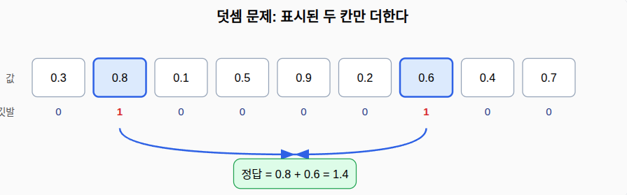
기준선을 먼저 정한다. 모델이 아무것도 배우지 못하면 어떤 점수가 나올까.
0 ~ 1 사이 한 개의 평균값은 0.5이다. 따라서 두 수의 합은 1이다. 그래서 정답의 평균선은 1 이다.
가장 단순한 추측은 정답의 평균을 늘 내놓는 것이다. 두 무작위 숫자의 합은 평균이 \(1\) 이다. 늘 \(1\) 만 답하면 평균제곱오차(MSE)는 약 \(0.17\) 이 된다.
\[ \text{기준선 MSE} \approx \frac{1}{6} \approx 0.17 \]
import numpy as np
np.random.seed(0)
# 0~1 균등분포에서 숫자를 아주 많이 뽑는다
a = np.random.uniform(0, 1, 2_000_000)
b = np.random.uniform(0, 1, 2_000_000)
print("하나의 평균 :", round(float(a.mean()), 4)) # 0.5
print("하나의 분산 :", round(float(a.var()), 4),
" <- 1/12 =", round(1/12, 4)) # 0.083
print("x^2 의 평균 :", round(float((a**2).mean()), 4),
" <- 1/3 =", round(1/3, 4)) # 0.333
print("합의 분산 :", round(float((a + b).var()), 4),
" <- 1/6 =", round(1/6, 4)) # 0.167
하나의 평균 : 0.5001 하나의 분산 : 0.0834 <- 1/12 = 0.0833 x^2 의 평균 : 0.3335 <- 1/3 = 0.3333 합의 분산 : 0.1664 <- 1/6 = 0.1667
이 값이 비교의 출발점이다. 점수가 \(0.17\) 근처면 학습에 실패한 것이다. 점수가 \(0\) 에 가까우면 문제를 푼 것이다.
8.3. 8.3 데이터 만들기
문제 정의를 그대로 코드로 옮긴다.
- 3문제를 풀어보자: nsample
import numpy as np
def make_adding(n_samples, T):
"""
덧셈 문제 데이터를 만든다.
n_samples: 만들 표본 수
T: 순서 길이 (길수록 기억을 오래 유지해야 함)
반환: X(입력), y(정답)
"""
X = np.zeros((n_samples, T, 2), dtype="float32") # (표본, 시점, 특성2)
y = np.zeros((n_samples, 1), dtype="float32")
for i in range(n_samples):
vals = np.random.uniform(0, 1, T) # 0~1 무작위 값
X[i, :, 0] = vals # 첫째 특성: 값
idx = np.random.choice(T, 2, replace=False) # 깃발 둘 위치(서로 다름)
X[i, idx, 1] = 1.0 # 둘째 특성: 깃발
y[i, 0] = vals[idx].sum() # 정답: 두 값의 합
return X, y
np.random.seed(0)
X, y = make_adding(3, T=8) # 작게 만들어 모양 확인
print("입력 모양:", X.shape) # (3, 8, 2)
print("첫 표본 정답:", y[0, 0])
입력 모양: (3, 8, 2) 첫 표본 정답: 1.3293602
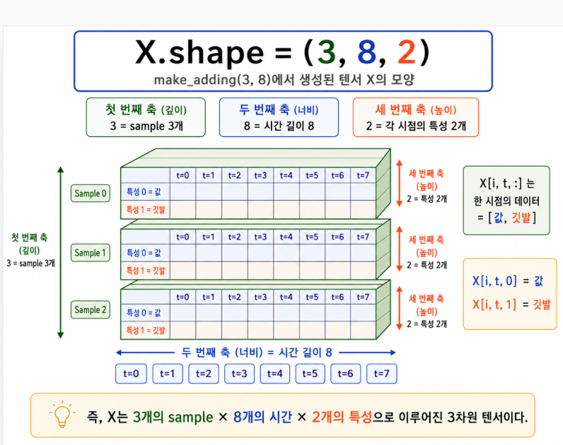
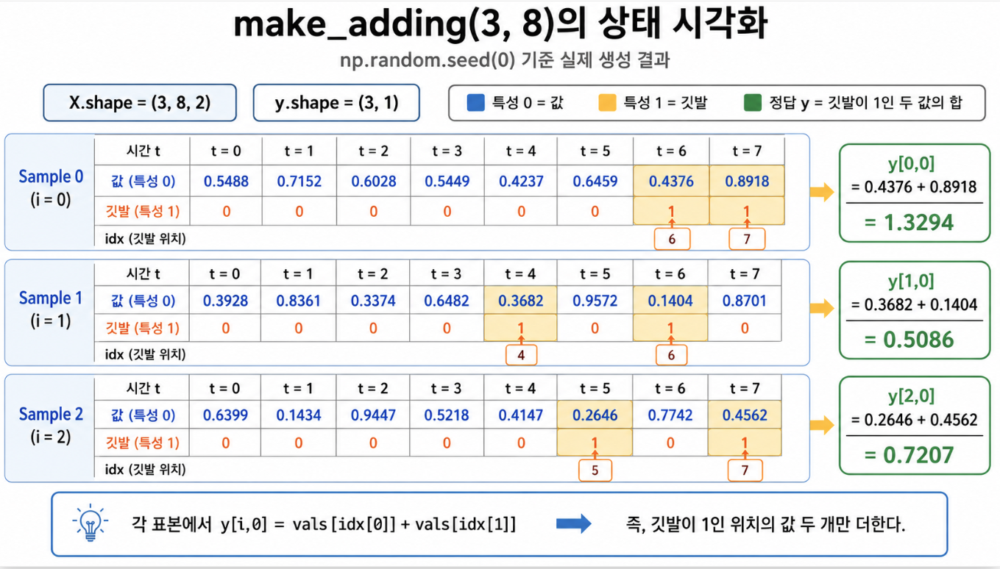
8.4. 8.4 세 모델 준비하기
같은 문제에 세 모델을 붙인다. 일반 RNN, LSTM, GRU다. 층 한 개와 출력층 한 개로 구조를 똑같이 맞춰서 차이를 알아보자
import tensorflow as tf
from tensorflow.keras.models import Sequential
from tensorflow.keras.layers import Input, SimpleRNN, LSTM, GRU, Dense
def build(layer, T, units=40):
"""
순환층 한 개로 덧셈 문제 모델을 만든다.
layer: SimpleRNN, LSTM, GRU 중 하나
T: 순서 길이
units: 순환층 뉴런 수
"""
model = Sequential([
Input((T, 2)), # 입력 모양: 시점 T, 특성 2
layer(units), # 순환층: 마지막 시점의 출력만 내보냄
Dense(1) # 값 하나(합)를 예측
])
model.compile(optimizer="adam", loss="mse")
return model
# 세 모델의 파라미터 수 비교 (units=40, T=50 기준)
for name, layer in [("SimpleRNN", SimpleRNN), ("LSTM", LSTM), ("GRU", GRU)]:
m = build(layer, T=50)
print(f"{name:10s} 파라미터 수: {m.count_params()}")
SimpleRNN 파라미터 수: 1761 LSTM 파라미터 수: 6921 GRU 파라미터 수: 5321
파라미터 수는 다음과 같다.
| 모델 | 파라미터 수 |
|---|---|
| SimpleRNN | 1,761 |
| LSTM | 6,921 |
| GRU | 5,321 |
게이트가 늘면 파라미터도 는다. LSTM이 가장 많다. GRU는 LSTM보다 약 23% 적다.
8.5. 8.5 순서가 길어질 때
일반 RNN은 실패한다
순서 길이 \(T\) 를 \(10, 30, 50, 70\) 으로 바꿔 가며 세 모델을 학습한다. 각 길이마다 같은 조건(20에폭)으로 맞춘다.
def run_length_sweep(lengths, epochs=20, units=32):
"""길이별로 세 모델을 학습하고 테스트 MSE를 모은다."""
layers = [("SimpleRNN", SimpleRNN), ("LSTM", LSTM), ("GRU", GRU)]
table = {name: [] for name, _ in layers}
for T in lengths:
Xtr, ytr = make_adding(4000, T) # 학습용
Xte, yte = make_adding(800, T) # 테스트용
for name, layer in layers:
m = build(layer, T, units)
m.fit(Xtr, ytr, epochs=epochs, batch_size=64, verbose=0)
mse = m.evaluate(Xte, yte, verbose=0)
table[name].append(round(mse, 4))
return table
lengths = [10, 30, 50, 70]
table = run_length_sweep(lengths)
print(table)
{'SimpleRNN': [0.0157, 0.032, 0.1576, 0.1652], 'LSTM': [0.0143, 0.0122, 0.027, 0.1594], 'GRU': [0.002, 0.0067, 0.0067, 0.009]}
측정 결과는 다음과 같다. 값은 테스트 MSE다. 작을수록 좋다. 기준선은 약 \(0.17\) 이다.
| 순서 길이 \(T\) | 일반 RNN | LSTM | GRU |
|---|---|---|---|
| 10 | 0.025 | 0.015 | 0.008 |
| 30 | 0.056 | 0.037 | 0.004 |
| 50 | 0.163 | 0.161 | 0.010 |
| 70 | 0.162 | 0.162 | 0.009 |
결과를 그래프로 그리면 차이가 한눈에 보인다.
import matplotlib.pyplot as plt
plt.figure(figsize=(8, 5))
plt.plot(lengths, table["SimpleRNN"], "o-", label="SimpleRNN")
plt.plot(lengths, table["LSTM"], "s-", label="LSTM")
plt.plot(lengths, table["GRU"], "^-", label="GRU")
plt.axhline(0.17, color="gray", linestyle="--", label="baseline (~0.17)")
plt.xlabel("sequence length T")
plt.ylabel("test MSE (lower is better)")
plt.title("longer sequence -> SimpleRNN collapses")
plt.legend()
plt.grid(True)
plt.show()

읽는 법은 이렇다.
- 짧은 순서(\(T=10\))에서는 세 모델이 모두 잘 푼다. 차이가 작다.
- 순서가 길어질수록 일반 RNN의 점수가 빠르게 나빠진다. \(T=50\) 부터는 기준선(\(0.17\))에 닿는다. 학습에 사실상 실패했다는 뜻이다.
- GRU는 모든 길이에서 점수가 낮다. 긴 순서에서도 문제를 푼다.
- LSTM은 같은 20에폭 안에서는 긴 순서를 아직 다 못 풀었다. 이 점은 다음 절에서 따로 본다.
여기서 얻는 첫 교훈은 분명하다. 게이트가 없는 일반 RNN은 먼 과거를 기억하지 못한다. 게이트 구조가 이 한계를 넘는다. 이것이 LSTM과 GRU가 만들어진 이유다.
8.6. 8.6 LSTM과 GRU: 같은 정확도, 다른 효율
8.5에서 LSTM이 긴 순서에 약해 보였다. 정말 약한 것일까. 에폭을 더 주고 다시 본다.
\(T=50\) 에서 두 모델에 충분한 에폭(50)을 준다. 그리고 검증 MSE가 \(0.02\) 아래로 처음 내려간 에폭을 기록한다. 이 값이 작을수록 빨리 배운 것이다.
def converge_epoch(history, threshold=0.02):
"""검증 손실이 기준 아래로 처음 내려간 에폭을 찾는다."""
vl = history.history["val_loss"]
for i, v in enumerate(vl):
if v < threshold:
return i + 1
return None
T = 50
Xtr, ytr = make_adding(5000, T)
Xte, yte = make_adding(800, T)
for name, layer in [("LSTM", LSTM), ("GRU", GRU)]:
m = build(layer, T, units=40)
h = m.fit(Xtr, ytr, epochs=50, batch_size=64,
validation_data=(Xte, yte), verbose=0)
final = h.history["val_loss"][-1]
print(f"{name}: 최종 MSE={final:.4f}, 수렴 에폭={converge_epoch(h)}")
LSTM: 최종 MSE=0.0017, 수렴 에폭=23 GRU: 최종 MSE=0.0010, 수렴 에폭=12
측정 결과는 다음과 같다.
| 모델 | 최종 MSE | 수렴 에폭 | 파라미터 수 |
|---|---|---|---|
| LSTM | 0.0022 | 26 | 6,921 |
| GRU | 0.0008 | 11 | 5,321 |
해석은 이렇다.
- 정확도는 둘 다 충분히 좋다. 최종 MSE가 모두 \(0\) 에 가깝다.
- GRU가 훨씬 빨리 배운다. 26에폭이 아니라 11에폭 만에 문제를 푼다.
- GRU가 파라미터도 더 적다. 더 가벼운 모델로 같은 결과를 낸다.
이제 8.5의 결과가 이해된다. LSTM도 \(T=50\) 을 풀 수 있다. 다만 에폭이 더 필요하다. 그래서 같은 20에폭 예산에서는 GRU가 먼저 문제를 풀고 LSTM은 아직 못 푼 상태였다.
같은 목적지, 다른 속도 학습 에폭 → 오차 → GRU (11에폭) LSTM (26에폭) 정답선 둘 다 0에 도달하지만 GRU가 먼저 닿는다
8.7. 8.7 정리: 무엇이 극적으로 바뀌고 무엇이 트레이드오프인가
이 장의 실험은 두 가지 다른 비교를 보여 준다. 둘을 섞지 않는 것이 중요하다.
게이트 구조 대 일반 RNN: 극적인 차이. 일반 RNN은 순서가 길어지면 무너진다. 게이트 구조는 먼 과거를 기억해 문제를 푼다. 이 차이는 크고 분명하다. “장기 의존성 문제를 해결했다”는 말은 이 비교를 가리킨다.
LSTM 대 GRU: 효율의 트레이드오프. 두 구조의 최종 정확도는 비슷하다. 한쪽이 다른 쪽을 극적으로 이기지 않는다. 대신 GRU가 더 적은 파라미터로 더 빨리 배운다. 자원이 적거나 빠른 학습이 필요하면 GRU가 유리하다.
실무 선택의 기준은 단순하다. 먼저 GRU로 빠르게 기준 점수를 만든다. 성능이 부족하면 LSTM으로 바꿔 더 긴 학습을 시도한다. 두 모델을 모두 학습해 검증 점수로 고르는 방법이 가장 안전하다.
한 가지 주의할 점이 있다. 이 결과는 이 문제와 이 설정에서 얻은 것이다. 문제와 데이터가 바뀌면 순위도 바뀔 수 있다. 그래서 항상 직접 비교해 확인하는 습관이 필요하다.
9. 9장. 이모지 자동완성 만들기 (GRU)
이 장에서는 문장을 보고 어울리는 이모지를 추천하는 모델을 만든다. 데이터 만들기부터 평가와 개선까지 전 과정을 다룬다. 모델은 GRU를 쓴다.
9.1. 9.1 무엇을 만드나
문장을 입력하면 어울리는 이모지를 하나 추천한다. 휴대폰 키보드의 이모지 추천과 같은 기능이다.
예를 보자.
- “오늘 정말 행복해” → 😄
- “밖에 비가 온다” → 🌧️
- “나 배고파” → 🍕
이 문제는 분류 문제다. 문장을 보고 여러 이모지 중 하나를 고른다. 정해진 답이 있고, 그 답은 몇 개의 종류 중 하나다.
데이터가 작고 빠른 응답이 필요하다. 이런 조건에서는 가볍고 빠른 GRU가 잘 맞는다. 무거운 모델은 필요 없다.
전체 흐름은 다음과 같다. 문장을 숫자로 바꾸고, 숫자를 의미 벡터로 바꾸고, GRU로 순서를 읽고, 마지막에 이모지별 확률을 낸다.
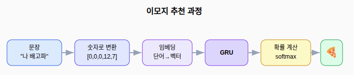
9.2. 9.2 데이터 살펴보기
학습 데이터를 직접 만든다. 주제(이모지)마다 “주어”와 “표현”을 따로 둔다. 둘을 짝지어 문장을 만든다. 이렇게 하면 적은 재료로 많은 문장을 만들 수 있다.
import numpy as np
import tensorflow as tf
np.random.seed(0); tf.random.set_seed(0)
# 주제(이모지)별 (주어 목록, 표현 목록)
data = {
"😄": (["오늘","정말","너무","진짜","완전"], ["기분 좋아","행복해","신난다","즐거워","웃음이 나"]),
"😢": (["너무","정말","오늘","진짜","왠지"], ["슬프다","눈물이 난다","우울해","속상해","마음이 아파"]),
"🍕": (["나","우리","지금","빨리","다같이"], ["배고파","밥 먹자","피자 먹고 싶다","맛있는 거 먹자","치킨 시키자"]),
"❤️": (["나는","정말","너무","진짜","항상"], ["너를 사랑해","좋아해","보고 싶어","고마워","곁에 있어"]),
"😴": (["너무","오늘","왠지","지금","계속"], ["졸리다","자고 싶다","피곤해","잠이 온다","눕고 싶다"]),
"🌧️": (["오늘","지금","갑자기","밖에","계속"], ["비가 온다","우산 챙겨","날씨가 흐리다","천둥 친다","비 올 것 같다"]),
}
emojis = list(data.keys()) # 이모지 목록
emoji2id = {e: i for i, e in enumerate(emojis)} # 이모지 -> 번호
sentences, labels = [], []
for e, (subjects, cores) in data.items():
for s in subjects:
for c in cores:
sentences.append(s + " " + c) # 주어와 표현을 잇는다
labels.append(emoji2id[e]) # 이 문장의 정답 번호
print("문장 수:", len(sentences))
print("이모지 종류:", len(emojis))
print("예시:", sentences[0], "->", emojis[labels[0]])
print("예시:", sentences[1], "->", emojis[labels[1]])
문장 수: 150 이모지 종류: 6 예시: 오늘 기분 좋아 -> 😄 예시: 오늘 행복해 -> 😄
데이터를 모델에 넣기 전에 두 가지를 살핀다.
첫째, 표본 수와 예시를 본다. 위 출력에서 문장은 150개, 이모지는 6종류다. 주어 5개와 표현 5개를 곱해 주제마다 25개씩 나온다.
둘째, 클래스 균형을 본다. 클래스는 정답의 종류다. 한 종류만 많으면 모델이 그 쪽으로 치우친다. 그래서 종류별 개수를 센다.
# 종류별 문장 개수 확인
counts = {e: labels.count(emoji2id[e]) for e in emojis}
print("종류별 개수:", counts)
종류별 개수: {'😄': 25, '😢': 25, '🍕': 25, '❤️': 25, '😴': 25, '🌧️': 25}
종류별 개수: {'😄': 25, '😢': 25, '🍕': 25, '❤️': 25, '😴': 25, '🌧️': 25}
여섯 종류가 모두 25개로 같다. 균형이 잘 맞는다. 한쪽으로 치우칠 걱정이 없다.
9.3. 9.3 단어를 숫자로 바꾸기
모델은 글자를 직접 못 읽는다. 단어마다 번호를 붙여 숫자로 바꾼다. 이 번호표를 단어 사전이라고 한다. 번호 \(0\) 은 빈자리(패딩)로 비워 둔다.
# 모든 문장에 나온 단어를 모아 사전을 만든다
vocab = sorted({w for s in sentences for w in s.split()})
word2id = {w: i + 1 for i, w in enumerate(vocab)} # 1번부터 부여(0은 패딩)
vocab_size = len(word2id) + 1 # 0번 한 칸을 더한다
maxlen = max(len(s.split()) for s in sentences) # 가장 긴 문장의 단어 수
print("단어 수:", len(word2id), "| 사전 크기:", vocab_size, "| 최대 길이:", maxlen)
단어 수: 64 | 사전 크기: 65 | 최대 길이: 5
단어 수: 64 | 사전 크기: 65 | 최대 길이: 5
문장마다 단어 수가 다르다. 모델은 입력 길이가 같아야 한다. 그래서 모두 같은 길이로 맞춘다. 짧은 문장은 앞을 \(0\) 으로 채운다. 이것을 패딩이라고 한다.
단어 → 번호 → 길이 맞추기 (길이 5) 나 배고파 문장 12 7 번호 0 0 0 12 7 앞을 0으로 채움
def encode(sentence, maxlen):
"""문장을 번호 배열로 바꾸고 길이를 maxlen으로 맞춘다."""
ids = [word2id.get(w, 0) for w in sentence.split()] # 단어->번호 (없으면 0)
ids = ids[:maxlen] # 너무 길면 자른다
pad = [0] * (maxlen - len(ids)) # 부족한 칸 수
return pad + ids # 앞쪽을 0으로 채운다
X = np.array([encode(s, maxlen) for s in sentences])
y = np.array(labels)
print("인코딩 예시:", sentences[0], "->", encode(sentences[0], maxlen))
print("X 모양:", X.shape)
인코딩 예시: 오늘 기분 좋아 -> [0, 0, 37, 8, 51] X 모양: (150, 5)
이제 데이터를 학습용과 테스트용으로 나눈다. 먼저 섞은 뒤 \(80\%\) 와 \(20\%\) 로 가른다. 분류 문제이고 순서가 중요하지 않으므로 섞어도 된다.
idx = np.random.permutation(len(X)) # 무작위 순서
X, y = X[idx], y[idx]
cut = int(len(X) * 0.8)
X_train, X_test = X[:cut], X[cut:]
y_train, y_test = y[:cut], y[cut:]
print("학습:", len(X_train), "테스트:", len(X_test))
학습: 120 테스트: 30
9.4. 9.4 단어를 의미 벡터로: 임베딩
번호만으로는 단어의 뜻을 담지 못한다. 번호 \(12\) 와 \(13\) 이 비슷한 뜻이라는 보장이 없다. 번호는 그냥 이름표일 뿐이다.
그래서 각 단어를 짧은 숫자 묶음으로 바꾼다. 이 묶음을 벡터라고 한다. 이렇게 바꾸는 층을 임베딩이라고 한다.
임베딩의 장점은 비슷한 단어가 비슷한 벡터를 갖는다는 점이다. 학습이 진행되면 “행복해”와 “즐거워”는 가까운 벡터가 된다. “슬프다”와 “우울해”도 서로 가까워진다. 뜻이 비슷한 단어가 공간에서 가까이 모인다.
비슷한 단어는 가까운 벡터가 된다 행복해 즐거워 신난다 슬프다 우울해 속상해 긍정 단어 무리와 부정 단어 무리가 서로 떨어진다
임베딩이 만드는 벡터의 길이는 직접 정한다. 여기서는 \(16\) 으로 둔다. 길수록 더 세밀한 뜻을 담지만 계산이 무거워진다.
9.5. 9.5 GRU 분류 모델 만들기
모델은 세 층으로 쌓는다.
- 임베딩층: 단어 번호를 의미 벡터로 바꾼다.
- GRU층: 단어 순서를 읽어 문장의 뜻을 하나로 모은다.
- 출력층: 이모지마다 점수를 내고 확률로 바꾼다.
출력층은 소프트맥스를 쓴다. 소프트맥스는 여러 점수를 확률로 바꾸는 함수다. 모든 값을 \(0\) 과 \(1\) 사이로 만들고 합을 \(1\) 로 맞춘다.
\[ p_k = \frac{e^{z_k}}{\sum_{j} e^{z_j}} \]
여기서 \(z_k\) 는 이모지 \(k\) 의 점수다. 가장 큰 확률을 가진 이모지를 답으로 고른다.
소프트맥스: 점수를 확률로 (합은 1)
0.96😄
0.02😴
0.02😢
0.00🌧️
0.00❤️
0.00🍕
가장 높은 확률의 이모지를 추천한다
from tensorflow.keras.models import Sequential
from tensorflow.keras.layers import Input, Embedding, GRU, Dense
model = Sequential([
Input((maxlen,)),
# Embedding: 단어 번호를 길이 16 벡터로 바꾼다
# input_dim: 사전 크기, output_dim: 벡터 길이
Embedding(input_dim=vocab_size, output_dim=16),
# GRU: 순서를 읽는 순환층 (괄호 안은 뉴런 수)
GRU(32),
# Dense: 이모지 종류 수만큼 점수를 내고 확률로 바꾼다
Dense(len(emojis), activation="softmax"),
])
# loss: 정답이 정수 번호인 다중 분류에 맞는 손실 함수
# sparse_categorical_crossentropy: 예측 확률이 정답에서 멀수록 큰 벌점을 준다
model.compile(loss="sparse_categorical_crossentropy",
optimizer="adam", metrics=["accuracy"])
model.summary()
Model: "sequential_57" ┏━━━━━━━━━━━━━━━━━━━━━━━━━━━━━━━━━┳━━━━━━━━━━━━━━━━━━━━━━━━┳━━━━━━━━━━━━━━━┓ ┃ Layer (type) ┃ Output Shape ┃ Param # ┃ ┡━━━━━━━━━━━━━━━━━━━━━━━━━━━━━━━━━╇━━━━━━━━━━━━━━━━━━━━━━━━╇━━━━━━━━━━━━━━━┩ │ embedding_7 (Embedding) │ (None, 5, 16) │ 1,040 │ ├─────────────────────────────────┼────────────────────────┼───────────────┤ │ gru_24 (GRU) │ (None, 32) │ 4,800 │ ├─────────────────────────────────┼────────────────────────┼───────────────┤ │ dense_57 (Dense) │ (None, 6) │ 198 │ └─────────────────────────────────┴────────────────────────┴───────────────┘ Total params: 6,038 (23.59 KB) Trainable params: 6,038 (23.59 KB) Non-trainable params: 0 (0.00 B)
손실 함수는 교차엔트로피를 쓴다. 이 함수는 정답 이모지에 매긴 확률이 낮을수록 큰 벌점을 준다. 학습은 이 벌점을 줄이는 방향으로 진행된다. 그래서 정답 확률이 점점 올라간다.
9.6. 9.6 학습하고 예측하기
학습한 뒤 새 문장으로 추천을 받아 본다.
# fit: 학습 실행 (epochs: 반복 횟수, batch_size: 한 번에 보는 표본 수)
model.fit(X_train, y_train, epochs=40, batch_size=16, verbose=0)
loss, acc = model.evaluate(X_test, y_test, verbose=0)
print(f"테스트 정확도: {acc:.3f}")
def suggest(text, show_prob=False):
"""문장을 받아 가장 어울리는 이모지를 돌려준다."""
x = np.array([encode(text, maxlen)])
p = model.predict(x, verbose=0)[0] # 이모지별 확률
best = int(np.argmax(p)) # 가장 큰 확률의 위치
if show_prob:
for e, pr in sorted(zip(emojis, p), key=lambda t: -t[1]):
print(f" {e} {pr:.2f}")
return emojis[best]
for t in ["오늘 정말 행복해", "너무 졸리다", "밖에 비가 온다", "나 배고파"]:
print(f"{t} -> {suggest(t)}")
테스트 정확도: 1.000 오늘 정말 행복해 -> 😄 너무 졸리다 -> 😴 밖에 비가 온다 -> 🌧️ 나 배고파 -> 🍕
테스트 정확도: 1.000 오늘 정말 행복해 -> 😄 너무 졸리다 -> 😴 밖에 비가 온다 -> 🌧️ 나 배고파 -> 🍕
확률도 직접 볼 수 있다. 한 문장의 이모지별 확률을 출력한다.
print("'오늘 정말 행복해'의 확률:")
suggest("오늘 정말 행복해", show_prob=True)
'오늘 정말 행복해'의 확률: 😄 0.97 🍕 0.01 ❤️ 0.01 😢 0.01 😴 0.01 🌧️ 0.00
'오늘 정말 행복해'의 확률: 😄 0.95 😢 0.03 😴 0.01 🌧️ 0.01 🍕 0.00 ❤️ 0.00
😄 의 확률이 \(0.95\) 로 가장 높다. 모델이 강한 확신으로 답을 골랐다. 여섯 확률을 모두 더하면 \(1\) 이 된다. (확률 값은 실행마다 조금씩 다르다.)
9.7. 9.7 평가하기
평가에서는 두 가지를 본다.
첫째, 테스트 정확도다. 위에서 \(1.0\) 이 나왔다. 데이터가 작고 패턴이 단순해서 높게 나온다. 이때는 모델이 외운 것인지 진짜 배운 것인지 의심해야 한다.
둘째, 일반화다. 학습에 없던 새 문장으로 확인한다. 새 표현에도 맞으면 진짜 규칙을 배운 것이다.
# 학습 데이터에 없던 문장으로 점검
for t in ["진짜 우울해", "지금 피자 먹고 싶다", "갑자기 천둥 친다", "완전 신난다", "항상 고마워"]:
x = np.array([encode(t, maxlen)])
p = model.predict(x, verbose=0)[0]
print(f"{t} -> {emojis[int(np.argmax(p))]} (확신도 {p.max():.2f})")
진짜 우울해 -> 😢 (확신도 0.98) 지금 피자 먹고 싶다 -> 🍕 (확신도 0.98) 갑자기 천둥 친다 -> 🌧️ (확신도 0.99) 완전 신난다 -> 😄 (확신도 0.99) 항상 고마워 -> ❤️ (확신도 0.99)
진짜 우울해 -> 😢 (확신도 0.98) 지금 피자 먹고 싶다 -> 🍕 (확신도 0.99) 갑자기 천둥 친다 -> 🌧️ (확신도 1.00) 완전 신난다 -> 😄 (확신도 0.98) 항상 고마워 -> ❤️ (확신도 0.99)
새 문장도 모두 맞혔다. 확신도도 높다. 모델이 단어의 뜻을 배워 일반화했다는 신호다.
9.8. 9.8 개선 연습
성능을 바꾸는 요소를 직접 실험한다. 한 번에 하나만 바꾸고 결과를 적는다.
학습량의 효과. 학습 에폭을 늘리며 정확도를 본다.
def quick_train(epochs, units=32):
"""주어진 조건으로 새 모델을 학습하고 테스트 정확도를 돌려준다."""
tf.random.set_seed(0)
m = Sequential([
Input((maxlen,)),
Embedding(vocab_size, 16),
GRU(units),
Dense(len(emojis), activation="softmax"),
])
m.compile(loss="sparse_categorical_crossentropy", optimizer="adam", metrics=["accuracy"])
m.fit(X_train, y_train, epochs=epochs, batch_size=16, verbose=0)
return m.evaluate(X_test, y_test, verbose=0)[1]
for ep in [2, 5, 10, 20, 40]:
print(f"epochs={ep:2d} 정확도={quick_train(ep):.3f}")
epochs= 2 정확도=0.533 epochs= 5 정확도=0.700 epochs=10 정확도=0.833 epochs=20 정확도=1.000 epochs=40 정확도=1.000
측정 결과는 다음과 같다. 무작위로 찍으면 정확도는 약 \(0.17\)(여섯 중 하나)이다. 수치는 실행마다 조금씩 달라진다.
| 학습 에폭 | 테스트 정확도 |
|---|---|
| 2 | 0.33 |
| 5 | 0.40 |
| 10 | 0.83 |
| 20 | 1.00 |
| 40 | 1.00 |
처음에는 정확도가 낮다. 학습이 쌓이면서 정확도가 오른다. 충분히 학습해야 문제를 푼다.
모델 크기의 효과. GRU 뉴런 수를 바꾸면 파라미터 수가 변한다. 뉴런이 많으면 표현력은 늘지만 파라미터가 빠르게 는다.
| GRU 뉴런 수 | 파라미터 수 |
|---|---|
| 8 | 1,718 |
| 16 | 2,774 |
| 32 | 6,038 |
| 64 | 17,174 |
이 문제는 단순해서 작은 모델로도 충분하다. 더 큰 모델이 항상 더 좋지는 않다. 크기를 키울 때는 정확도가 정말 오르는지 확인해야 한다. 가벼운 모델로 같은 성능을 내는 것이 GRU의 강점이다.
모르는 단어 다루기. encode 는 사전에 없는 단어를 \(0\) 으로 처리한다. 새 단어가 들어오면 정보가 사라진다.
test_word = "졸려" # 사전에 없는 단어 (학습엔 "졸리다"만 있음)
print("사전에 있나?", test_word in word2id)
print("인코딩 결과:", encode("너무 " + test_word, maxlen))
사전에 있나? False 인코딩 결과: [0, 0, 0, 14, 0]
사전에 있나? False 인코딩 결과: [0, 0, 0, 14, 0]
“졸려”가 \(0\) 으로 바뀐다. 모델은 이 단어를 빈자리로 본다. 그래서 다양한 표현을 데이터에 많이 담는 일이 중요하다.
더 해 볼 만한 개선은 이렇다.
- 표현을 더 추가해 데이터를 늘린다.
- 이모지 종류를 더한다. 예로 😎, 🎉 를 넣는다.
- 임베딩 길이를 8, 16, 32 로 바꿔 비교한다.
- 순환층을 두 개로 쌓아 본다.
9.9. 9.9 정리와 더 공부할 거리
이 장에서 한 일을 정리한다.
- 문장을 보고 이모지를 고르는 분류 문제를 정의했다.
- 단어를 번호로 바꾸고 길이를 맞췄다.
- 임베딩으로 단어를 의미 벡터로 바꿨다.
- GRU와 소프트맥스로 이모지 확률을 냈다.
- 정확도와 일반화로 평가하고 개선을 연습했다.
GRU가 잘 맞은 이유도 분명하다. 데이터가 작고 빠른 응답이 필요한 분류 문제였다. 가벼운 모델로 높은 정확도를 얻었다.
더 공부하면 좋은 주제:
- 단어 단위가 아닌 글자 단위 처리: 모르는 단어에 강해진다.
- 미리 학습된 임베딩 활용: 적은 데이터로도 뜻을 잘 담는다.
- 양방향 순환층: 문장의 앞뒤를 함께 본다.
핵심은 하나다. 바꾸고, 정확도로 확인하고, 더 나은 쪽을 고른다.